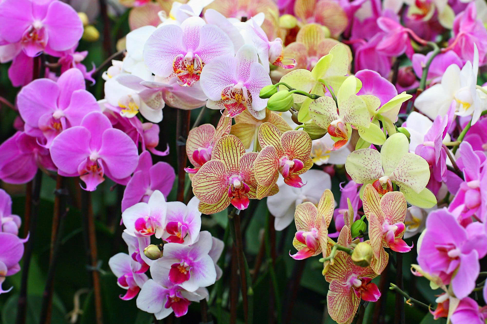
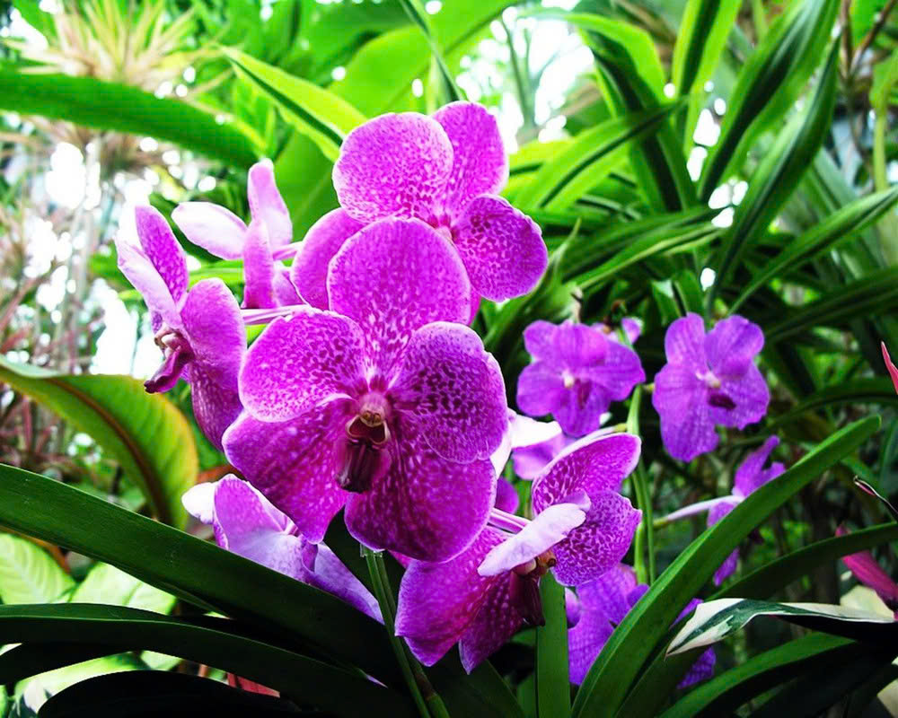
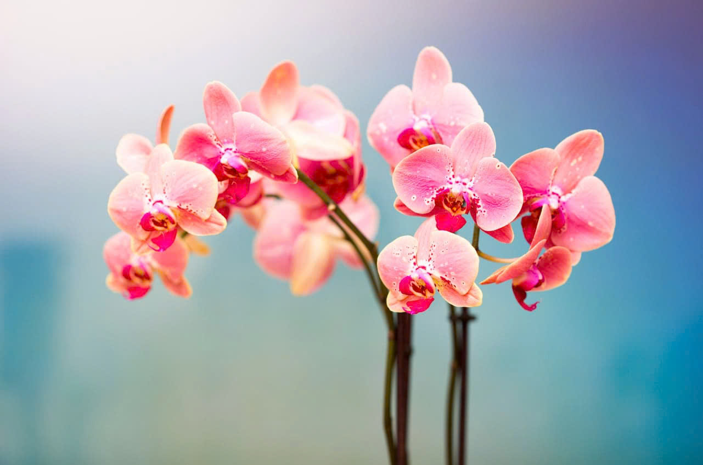

|  | |
1. Trồng thành bằng xơ dừaChọn xơ của những quả dừa già và khô rồi xé ra từng mảnh to băng nửa bàn tay. Sắp các mảnh sát nhau thành băng đài trên giàn gỗ hoặc tre và giữ chặt chúng lại bằng 2 thanh nẹp tre. |
 |
|  |
2. Một số điểm cần lưu ýKhi trồng xong nên để cây ở nơi mát mẻ có độ ẩm cao cho đến khi rễ non phát triển mới chuyển dần ra nơi có ánh sáng phù hợp. Sau khi trồng 1-2 ngày không cần tưới nước ngay vì dễ bị thối cây. Phải thường xuyên quan sát xem đất còn đủ độ ẩm hay đã khô. Cần tưới nước dưới đạng phun sương. |